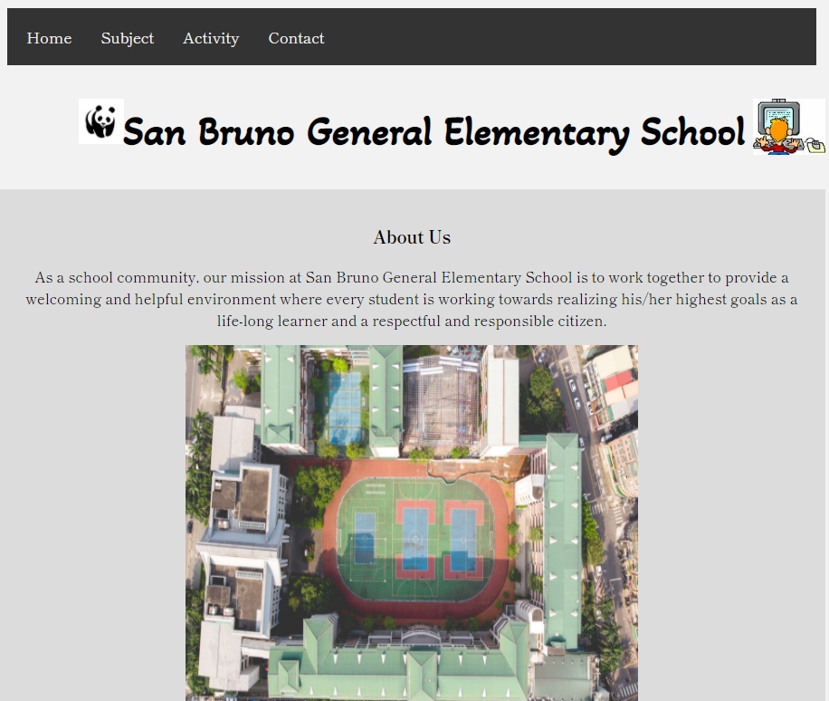
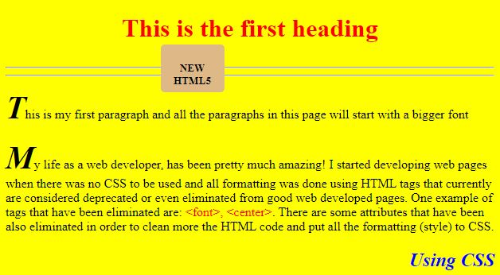

Using the student.jpg and elementarystudent.png files as background images and one image should be put on the right top side of the page and the other on the bottom left of the page. And then including an image using the figure element that would represent like a photograph of the school
Modifying the code of this page to use HTML5 and you will use external CSS to format the page maintaining the original layout format
First letter of each paragraph in the content area is bigger than the rest of the paragraph (about 250% bigger). The color of those bigger fonts is the same as the background color of the footer.
footer has a bigger height, but the text continues to be centered horizontally and also vertically. You will include in the footer a link to the assignments.html page.
The menu has been modified to be centralized within the page, and the items of the menu are presented in a "button" format. The color of the "buttons" are the same color as the background of the footer